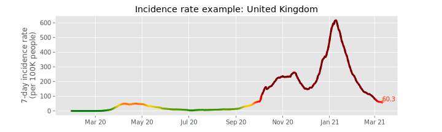
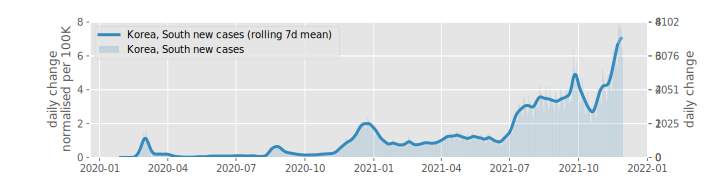
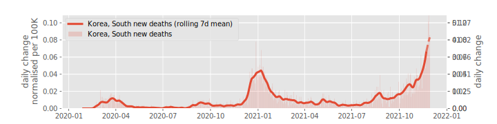
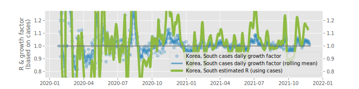
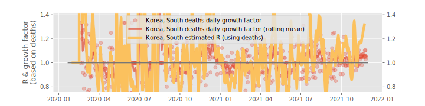
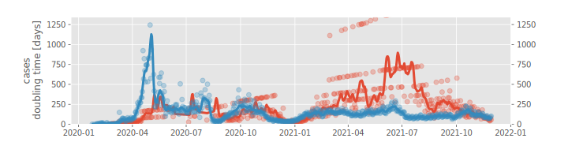
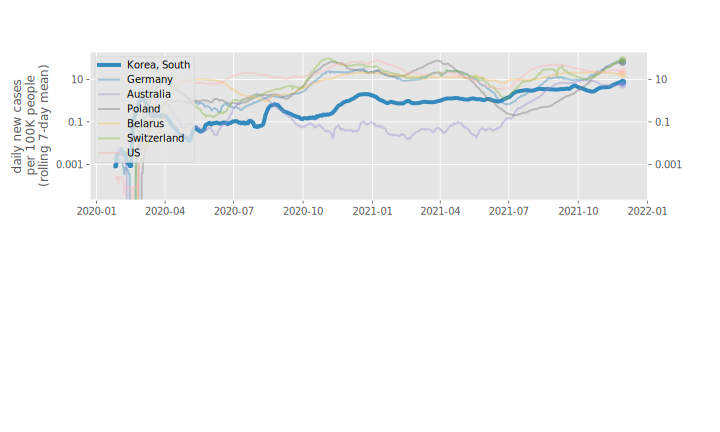
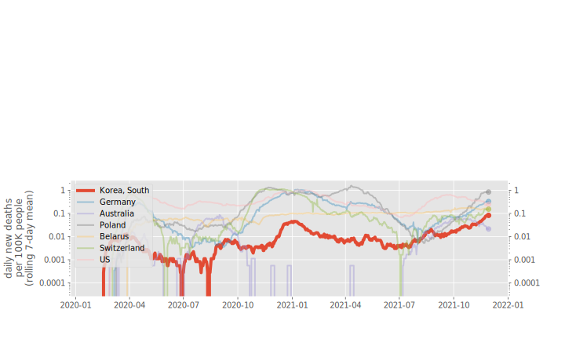
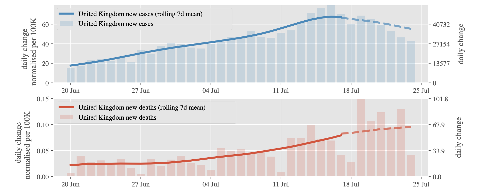
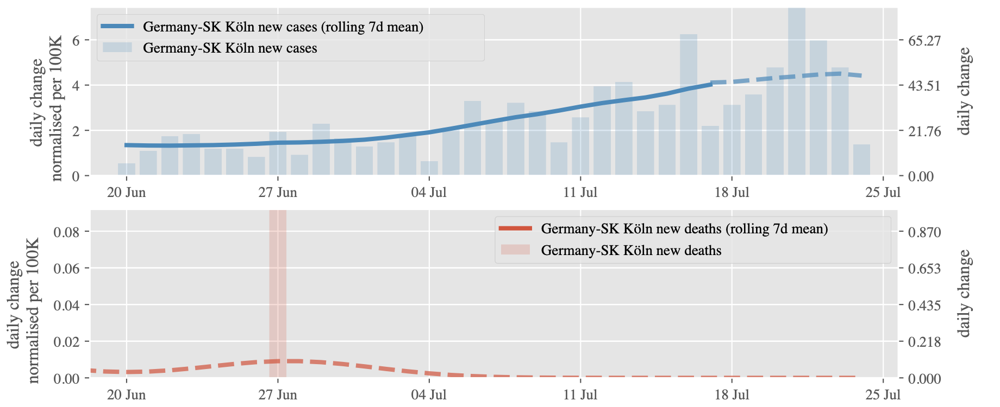

Contents
- Plot 1: 7-day incidence rate
- Plot 2: daily changes in cases
- Plot 3: daily changes in deaths
- Plot 4: R & growth factor based on cases
- Plot 5: R & growth factor based on deaths
- Plot 6: Doubling times
- Plot 7: Comparison of daily new cases with other countries
- Plot 8: Comparison of daily new deaths with other countries
- The role of dashed lines
We discuss the plots from the top (number 1) to the bottom (number 8) that are available for all regions.
Plot 1: 7-day incidence rate
- Shows how many people have been confirmed to be infected during the last seven days prior to a date, per 100 thousand of inhabitants.
- This is a cumulative normalised metric, and it is possible to use it for comparison of different regions.
- For low rates (around zero) the graph is green, and with the grows of the rate it gradually becomes yellow, then red, then maroon.
- The number near the cross on the right edge of the graph shows the latest value.
- This number is generally reported in the media as incidence rate.
- The interesting question is: how fast do they grow?
Plot 2: daily changes in cases
- Shows how many new confirmed cases are reported per day, shown as blue bars.
- Blue lines show a seven day (rolling) average over the bar data (using a Gaussian window with a standard deviation of 3 days) - this produces smoother data. It also helps to remove the effect of the weekend (in some countries reported numbers drop during and just after the weekend)
- We would like to see these numbers of daily changes decrease from day to day. The faster they go down the better. Ideally their reach 0.
- For the data of South Korea, we can see that the peak of new infections was around 1st March 2020, and following that the number of new infections decreased to around 100 per day for the second half of March, before the numbers started to decrease further.
Plot 3: daily changes in deaths
- Red bars shows how many new deaths were reported for each day.
- Red line shows a seven day (rolling) average over the bar data.
- The number of deaths is expected to follow the number of infections with some time delay, and reduced by a fraction (the case fatality rate).
Plot 4: R & growth factor based on cases
Reproduction number R
- The Reproduction number R (Wikipedia) expresses how many people are infected from one person with COVID19.
- If we assume an average infectious period, we can estimate R from the reported new cases. This estimate of R is shown as the green line. The estimate of R will be affected by inaccuracies in the reported numbers.
- Following the Robert Koch Institute, we assume an average infectious period of 4 days. This means, for example, for a reproduction number R=2, that on average each infected person will infect 2 other people after 4 days.
- R needs to be below 1.0 for the total number of infections to shrink. A value of R above 1 will lead to exponential growth.
- See this page for more details.
Daily growth factor
- The growth factor is the ratio of new cases today relative to new cases yesterday
- Blue dots show these ratios for cases, and are computed based on the smoothed data shown in plot 2 and 3.
- The solid line is a 7-day rolling mean over these points to provide smoother data.
- As long as the growth value is greater than 1.0, the number of new infections is increasing.
- If the growth value is exactly 1.0, then we have the same number of new infections every day.
- The growth factor needs to be below 1.0 for the spread to slow down.
Assessing success for containment measures
The reproduction number R and the growth factors are measures of success for the virus containment: as long as they are below 1.0, the spread is slowing down. If the growth factor is greater than one, the number of newly infected people is increasing from day to day; this must be avoided.
What is the difference between R and the growth factor? They are computed differently. The growth factor is simpler and more direct: it describes changes in new infections from day to day.
The reproduction number R is used in epidemiology, and by politicians. It is harder to estimate than the daily growth factor. The daily growth factor and R cannot be compared directly, but both are qualitatively similar: they need to stay under 1.0 for the infections to become fewer over time.
Growth factor and R do not depend on the total number of new cases (but only on the relative change over time). For that reason we can get high fluctuations where the numbers of new cases is small (imagine there was 1 case yesterday, and 7 cases today, this would give a growth factor of 7). In short: where the number of daily new cases is small, the growth factor can appear to change quickly. For the same reason, R and the growth factor are good indicators to assess changes in spread even with small case numbers.
Plot 5: R & growth factor based on deaths
Conventionally, the R number is computed on infections (here shown in plot 4 and referred to as "R based on cases"). Assuming a fixed mortality rate, we can also use the reported deaths to estimate R (as R depends not on the total numbers but their change over time). This is done in plot 5, and the estimated R is shown in yellow. See discussion of plot 4 above for details.
This computation of R based on deaths can be of interest, for example, for the case of the United Kingdom, where the daily new infections remained approximately constant from about 10 April to about 10 May, but at the same time the daily number of deaths shows a slow but persistent reduction from day to day. A possible explanation for the situation would be that the nearly constant number of daily infections results from a saturation of the testing capacity, and that actually the spread is reducing (which is reflected in the deaths, which may be more accurately captured and reported). In that case, the R based on deaths may provide a more accurate estimate.
If deaths and infections are similarly captured and reported, both entities should point to the same value, although the R based on deaths could be trailing the estimate of R based on infections by several weeks; reflecting the duration of the illness.
Plot 6: Doubling times
This plot computes the doubling time of the cases (blue) and deaths (red), assuming that the growth of cases and deaths as shown in plot 1 is exponential.
In more detail, we compute the doubling period from one day to the next and show this as transparent dots.
If a value of 3 is shown, this means that at that point in time, it took 3 days for the numbers of cases (or deaths) to double.
The solid line is a 7-day rolling mean over these data points and provides more robust guidance.
Looking at the doubling time shown by the solid lines, we get another indicator to assess the spread of the virus.
- For many countries, in the early stages of the outbreak, this doubling time for confirmed infections (blue line) is somewhere around 2 to 3 days.
- As the spread of infections is reduced (by schools closing, people exercising social distancing, staying at home, etc), the growth rate of the exponential function becomes smaller, and correspondingly the doubling time increases.
- We would like to see the doubling time to get larger, as this an indication
- that the growth of infections and deaths is decreasing (ideally infinitely large, when no new infections occur).
The example data for South Korea shows that
- the doubling time for cases grows from around 3 days in the early stages
- to reach a plateau with a doubling time of around 60 days from 15 March to 1 April 2020. During this time, the number of daily new infections (plot 2) stabilises around 100, and the growth factor (blue line in plot 4) is approximately 1.0.
- In April, the doubling time increases further, which corresonds to a further reduction of daily new infections (plot 2), and a growth factor (blue line in plot 4) below 1.0.
Occasionally, the solid lines are omitted if there are not enough data points.
Plot 7: Comparison of daily new cases with other countries
- The x-axis shows the number of days since a particular number of new cases per day (such as 10) have occurred in that country, and the y-axis the number of new cases for that day.
- We see that countries follow similar paths, with the common properties that the curve increases until the number of cases per day peaks, and then the curve comes down again.
- The y-axis is logarithmic.
- Due to the logarithmic y-axis, this visualisation can help to understand at what stage in the outbreak an area is (despite the different size of the countries and numbers of cases).
- The curve shows as 7-day rolling mean to provide a smoother line than the noisier individual data points (in particular with fewer cases per day). This leads to non-integer values.
- [The curve for China starts at a higher value than 10, as the first recorded value was 548. We could manually correct this.]
Plot 8: Comparison of daily new deaths with other countries
- As Plot 7, but for deaths not cases.
The role of dashed lines
We use a dashed line to indicate where the data is inaccurate (for some reason).
Example 1: Last days in incidence, deaths and cases:
United Kingdom The most recent 7 days in incidence, and new cases and new deaths are shown as a dashed line.
See the bitmap above as an example. Here the dashed line is chosen because we need a 7-day rolling average over the raw data to average out weekly fluctuations. (Some additional Gaussian smoothing is applied to help the eye which needs another 3 days). See function compute_daily_change in https://github.com/oscovida/oscovida/blob/master/oscovida/oscovida.py if you care for the details).
In more detail: For the 7-day average for today, we need to sum the reported new cases from the last 3 days, today, and the next 3 days and divide this by 7 (and we need another 3 days in either direction for visual smoothing). For the most recent 7 days, we cannot do this (because we don't know the data from the future yet). Instead, we compute a rolling average using the 7 previous(!) days. Using this method, we can compute the averaged data up to day with the last known data point.
However, the computation is different (and at times it might be possible to note a step in the data as the line [and/or its slope] as it changes from solid to dashed). This is highlighted through using a dashed line.
Example 2: Deaths in German districts
For the data on deaths for districts within Germany that is reported by the RKI, we dash the most recent 6 weeks. The reason here is that the RKI reports deaths with the date at which the infection took place, not the date on which the person died. Before vaccinations were available, it was reasonable to assume that COVID-related deaths would die within 6 weeks of the infection taking place.
We have a detailed investigation of this phenomenon at https://oscovida.github.io/2020-germany-reporting-delay-meldeverzug.html .
We thought it is important to understand this when interpreting the data, and have thus dashed the line in the plots for deaths in Germany for the most recent 6 weeks.
[This six week period should be reviewed as the larger fraction of vaccinated and older people changes this: younger and healthier patients may stay significantly longer in medical and intensive care before they die from COVID.]